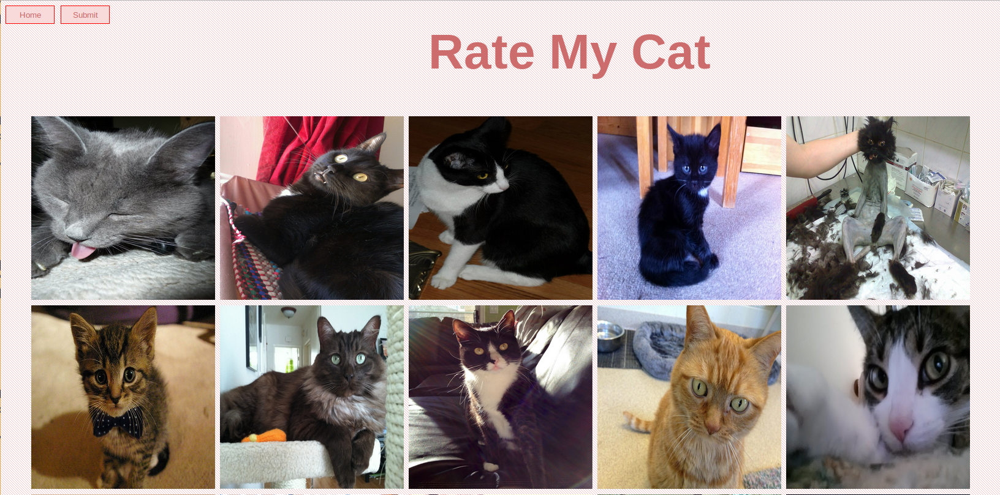
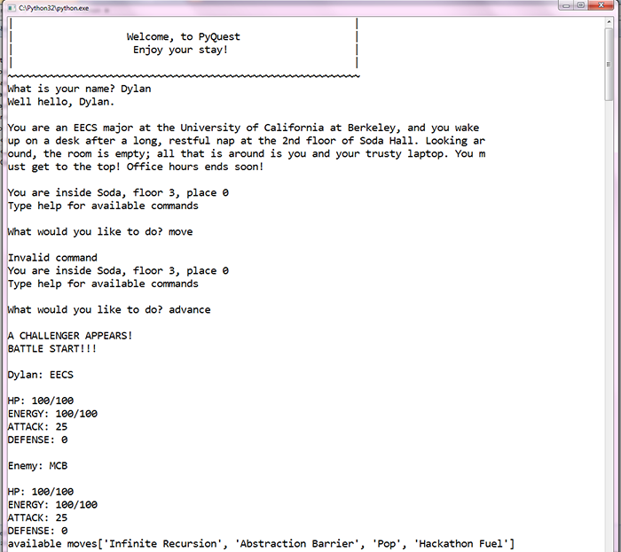
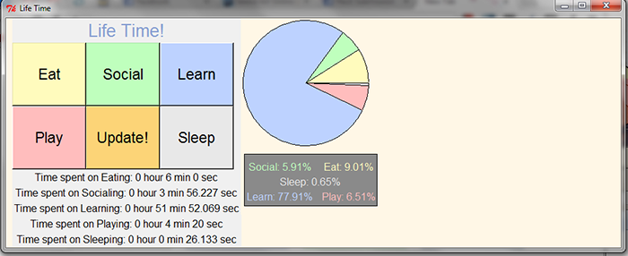
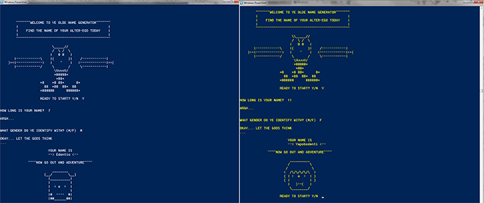

Projects
Home
Pixel People

A solo project that won first at Hackers@Berkeley's semi-annual HackJam. A static webpage that uses javascript and the Facebook API are used to let the player move around and speak to "spirits" where they can view and like posts without context in order to eliminate bias.
~
Beautiful Divs
Created as an exploration in javascript and jquery. Randomly generates colored squares across the current visible portion of the user's windows. Includes interchangable color schemes and different creation modes.
~
Voxeljs CTF
Extended an open-source voxel engine written in javascript by adding logic for map generation, teams, team chat, and capture the flag mechanics.
~
This Website
This website will be improved over time as I learn more web development! Currently it is entirely coded in HTML5 and CSS3 while using Google Font API's for typography. All graphical assets are original content.
~
Rate My Cat

A web application done in a group for a hackathon written in Python using Flask and MongoDB to implement an upload, viewing, and ranking system for pictures of cats.
~
PoCALMon
{kind=link}
A practice in Object Oriented Programming done in Python for a hackathon with a group of friends. It is a text based adventure game with an instance based battle system complete with different 'majors' that each have unique movesets, weaknesses, and strengths. The end boss asks basic Python questions in the final fight. This was a fun adventure in interpreting user input that also ended up being a learning tool for other CS61A students to test their Python knowledge.
~
LifeTimes
{kind=link}
Lifetimes was an application written by me and two friends for the Facebook Hackathon. It is written in Python and uses Tkinter for the GUI. By pressing the proper category for each event in your life, you can generate a pie chart of how your life is spent.
Coding this simple application transitioned me into group work, and it taught me the importance of design, time management, and work delegation.
~
Ye Old Name Generator
{kind=link}
Ye Olde Name Generator is a script written in Python that was made in 12 hours during a hackathon. It randomly selects a beginning letter which can either be a vowel, consonant, or consonant pair, and then systematically alternates between vowels and consonants or consonant pairs. The name generated is as long as the user inputs and the chosen gender will determine whether special endings are used. In addition to names the script also outputs a random ASCII art face based on gender and randomly selected parts. In total there are over 2000 possible face combinations.